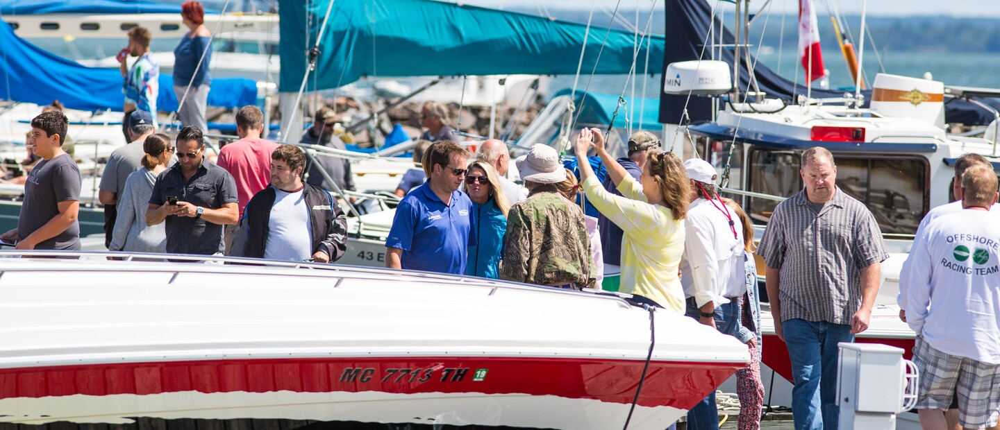

Haliburton Antique Boat Show: A Triumph of Timeless Elegance
Haliburton, Ontario – March 13, 2024
The Haliburton Antique Boat Show was a huge success, drawing in vintage boat enthusiasts from across Canada and beyond. This year’s show featured over 100 classic boats, from sleek mahogany speedboats to elegant wooden cruisers, all gleaming in the summer sun on the shores of Redstone Lake.
The highlight of the event was the restoration competition, where boats that had been lovingly restored by owners were displayed for all to admire. Bill Stevenson, the winner of this year’s restoration category, brought his 1930s-era "Huron Voyager" back to life, impressing the judges with his meticulous attention to detail.
"We’re thrilled to see so many passionate boat owners and collectors join us in celebrating these magnificent pieces of maritime history," said Samantha Richards, event coordinator.

Bancroft Vintage Boat Festival: A Celebration of Waterways and History
Bancroft, Ontario – March 2rd, 2025
The Bancroft Vintage Boat Festival is a must-attend event for boat lovers! Nestled along the historic Bancroft, this festival celebrates both the boats that have traversed its waters and the rich cultural history of the region.
This year's event included an impressive parade of boats, guided tours of historic vessels, and presentations on the development of the canal system, which was crucial to early Canadian trade routes. This year, the festival will feature a new interactive exhibit, "Boats Through Time," which showcases the evolution of boat design from the 1800s to today.
Some of our lovely volunteers wearing the new Vintage Boat Association merch!
Content submitted by our loyal members, March 2025 edition
What I love about vintage boats
By Gary Weston, Boat Lover and Enthusiast
As a lifelong lover of vintage boats, I’ve had the privilege of restoring and preserving several classic vessels over the years. There's something incredibly special about working on these boats—their history, their craftsmanship, and the satisfaction that comes with breathing new life into them. Every restoration project is a journey, both of discovery and of revival, and it’s an experience that every boat enthusiast should consider.
My passion for vintage boats began over 30 years ago when I first laid eyes on a 1938 Chris-Craft Runabout at a local antique show. The boat was in rough shape—its varnish was faded, the engine was non-functional, and the upholstery was in tatters—but I could see the potential. With some hard work, a lot of patience, and a deep respect for the craft, I brought it back to its former glory. That project sparked my lifelong obsession with restoring vintage boats.
There are many challenges in restoring these beautiful boats. First and foremost, finding the right materials can be difficult. Original wood, especially mahogany, is becoming harder to source, and maintaining the authenticity of the restoration is crucial. When I restore a boat, I aim to preserve as much of the original material as possible. If any parts need to be replaced, I make sure to use the highest quality materials to keep the boat’s character intact.
Another challenge is the restoration of the engine. These classic engines, often from the 1920s or 1930s, require a great deal of expertise. While modern engines are more efficient, there's nothing quite like hearing the roar of a vintage engine as it powers up, echoing the sounds of a bygone era. I’ve worked with many mechanics over the years who specialize in these old engines, and it’s amazing to see how these talented individuals can breathe life into a piece of history.
What I love most about restoring classic boats, however, is the community it brings. Every time I finish a project and show it at a boat show, I’m reminded of the camaraderie among boat lovers. We share tips, stories, and a common passion for preserving these works of art. The Vintage Boat Association has been instrumental in bringing together like-minded individuals, and it’s through these connections that I’ve learned the most about the intricacies of boat restoration.
My advice to anyone thinking about restoring a vintage boat is simple: be patient, be respectful of the craftsmanship, and never rush the process. The reward is more than just a beautifully restored boat—it’s the connection you form with history, the craftsmanship, and the community. There’s nothing quite like the pride of taking a vintage boat out on the water, knowing you’ve played a part in preserving its legacy.
If you’re ever in the market for a restoration project, I encourage you to dive in. Whether it’s a small wooden dinghy or a grand mahogany yacht, every boat has its own story to tell, and with the right care, that story can continue for generations to come.
Gary posing with two other members at the Muskoka Fishing Trip in July 2024
Gary Weston is a passionate boat enthusiast and restorer, based in Ontario, Canada. He has spent over 30 years restoring vintage boats and is an active member of the Vintage Boat Association.
The Joys of Volunteering
By Beverly, Volunteer and Vintage Boat Enthusiast
Volunteering with the Vintage Boat Association has been one of the most rewarding experiences of my life. There's a special kind of joy that comes from helping others, especially in a community that shares a deep love for preserving maritime heritage. Whether I’m assisting at boat shows or organizing events, I always feel like I’m part of something much bigger than myself. It’s not just about the work—it’s about the connections I’ve made with fellow boat lovers and the pride in knowing I’ve played a role in something so meaningful. If you’re looking to make a difference, I can’t recommend volunteering enough. The friendships, the knowledge, and the satisfaction are well worth it!
Beverly posing during the set up for Boatfest last summer